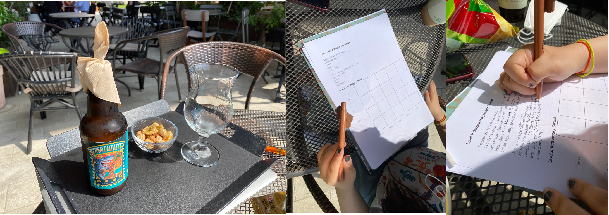

Multi-sensorial Packaging on Potato Chips.
2020.08-2020.12
Info.
A packaging that shapes the sensory attributes before tasting; attempt to visualize taste.
Methods.
· in-depth research
· Sensory
workshop
· Qualitative coding
· Sensory Design
· Visualization
Background.
Visualizing taste can contribute to desiging one's expectations towards foods; a packaging can be the mediator.
Project by: Eunsol Choi. Adivsor: Younah Kang
This project was a part of my senior thesis
This project was a part of my senior thesis
After the mechanism analysis, attempts from visualizing taste to creating a sensory packaging - are shaping the intangible.
Project Overview
Abstract
We encounter
countless products a day and before its physical usage all we can rely on for information
is
its outer packaging. Meanwhile, it is proven that thorough taste education and sensorial stimuli enable
better joy in consuming different food items. With visualized taste elements and sensorial attributes
carefully designed into food packaging, consumers can expect and perform better taste experience of
which
formerly focused on its visual elements only.
Research Questions
There exists countless food, people had built
their own experience and preference ---- throughout their entire life. People eat to live. But there
is so much more than eating to survive in current culture.
1. Can you visualize taste?
2. When you visualize taste, does it only involve describing ’the taste’ itself?
3. Does amplifying other senses lead to changing taste perception?
4. Can being able to visualize the taste beforehand lead to changing perceived taste and overall food experience?
5. Would specific visualizing method help neophobia (people hesitant to try new foods) to try specific food more than a regular packaging would?
1. Can you visualize taste?
2. When you visualize taste, does it only involve describing ’the taste’ itself?
3. Does amplifying other senses lead to changing taste perception?
4. Can being able to visualize the taste beforehand lead to changing perceived taste and overall food experience?
5. Would specific visualizing method help neophobia (people hesitant to try new foods) to try specific food more than a regular packaging would?
Process Overview

METHODOLOGY
Following items were selected as the exploration input
variables: Strawberry candy, Lemon, Beer, and Salted chips.
The sensory exploration was conducted in a form of a creative workshop, as a means to understand the
sensory interactions emerging from each food item, the level of intensity and pleasure for each sensory
cue and which sensory attributes can amplify the hedonistic properties.
Consequently, the workshop consisted of three levels: the general
interpretation and imagery, levels of intensity and pleasure, and sense amplification.
Level 1: General Interpretation

Following test is conducted to generate informative
insights on people’s insights on certain food, without consuming it. Certain expectations,
prejudice, judgements and biased level can be analyzed from here.
Level 1-1: Taste Imagery

Following test is conducted to witness any trends on the
‘images’ that can be utilized in visualizing the taste and corresponding sensory factors that can
well be visualized too.
Level 2: Level of Senses/ Intensity/ Pleasure

Following tests are conducted to collect insights on what
are the sensory cues that involve the most when eating certain food; if not taste, what is it and
how can they be targeted and amplified in the future.
Level 3: Sense Amplification

Following test is designed to discover the maximized
sensory ability to enhance one’s food experience. With the same item but with different sensory
variables, the participant focuses on finding the best fitting experience for him or herself.
Results


Procedure


Discussion
CONGRUENCY IS THE KEY.
· Vision > touch > smell > taste > sound
· Interactions between senses: color for the smell, sound for the feel
· Based on the research congruent sounds, vision, smell represented apparent satisfaction level.
· However for the ‘negative’ tastes such as sour and bitter, participants preferred the stimuli that overcompensates the taste, rather than congruent stimuli.
· Vision > touch > smell > taste > sound
· Interactions between senses: color for the smell, sound for the feel
· Based on the research congruent sounds, vision, smell represented apparent satisfaction level.
· However for the ‘negative’ tastes such as sour and bitter, participants preferred the stimuli that overcompensates the taste, rather than congruent stimuli.
RELAIONSHIP WITH THE PRIMITIVE
NATURE.
· All of the five participants, when asked to draw and visualize different aspect of certain taste, they based their thoughts starting from taste’s very origin.
· One can assume that the pure form of basic taste comes directly from nature despite the abdundant artificial taste enahancers
· We often associate the color of the taste from the taste’s origin: salty=> sea salt=> sea => blue
· All of the five participants, when asked to draw and visualize different aspect of certain taste, they based their thoughts starting from taste’s very origin.
· One can assume that the pure form of basic taste comes directly from nature despite the abdundant artificial taste enahancers
· We often associate the color of the taste from the taste’s origin: salty=> sea salt=> sea => blue
FEASIBILITY OF VISUALIZING
TASTE.
· Witnessed the different elements clearly affecting and transforming one’s taste perception that can be further investigated to collect a detailed database
· Witnessed a set of universal and repetitive visuals of perceived taste between participants that can be utilized in forming a taste idea or packaging design.
· Selected the salted potato ships to have its packaging designed multi-sensorially. Implemented the results ot its sensory modalities and observed interactions upon the public.
· Witnessed the different elements clearly affecting and transforming one’s taste perception that can be further investigated to collect a detailed database
· Witnessed a set of universal and repetitive visuals of perceived taste between participants that can be utilized in forming a taste idea or packaging design.
· Selected the salted potato ships to have its packaging designed multi-sensorially. Implemented the results ot its sensory modalities and observed interactions upon the public.
Visualizing and Prototyping

Exhibition and Presentation

Next Project →
Sentiment Anomaly
← Previous Project
Flavor Mechanisms
© 2021 Eunsol Choi. All Rights Reserved. Built with HTML/JS/JQUERY/🌞